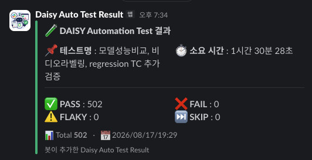

데이터셋 업로드부터 7종 AI 모델 학습·배포까지, 비전 AI 학습 플랫폼의 전체 파이프라인을 Playwright로 자동 검증하는 회귀 시스템을 1인으로 설계·구축·운영하고 있습니다.
릴리스마다 수동으로 하루 이상 걸리던 회귀 검증. 실서버 · 단일 공유 계정 · 30분~3시간짜리 학습이라는 제약까지 걸려 있었습니다.
제약을 먼저 정의하고, 테스트가 서로를 깨뜨리지 않는 구조를 설계했습니다.
명령 한 줄 무인 실행 + Slack 자동 보고. 스위트가 2배 이상 늘어나는 동안 아키텍처는 다시 쓰지 않았습니다.
테스트를 짜기 전에 이 제품이 자동화에 무엇을 허용하지 않는지부터 정리했습니다.
| 제약 | 그래서 무엇이 어려워지는가 | 설계로 답한 방식 |
|---|---|---|
| 산출물의 소속 모든 노드는 자기 프로젝트 안에서만 유효 |
고정 프로젝트를 재사용하면 실행할 때마다 노드가 쌓여 결국 깨진다 | 테스트마다 전용 프로젝트 생성 → 종료 시 삭제를 공용 헬퍼로 강제 |
| 실서버 대상 목(mock) 없이 3개 실환경 |
실패를 임의로 만들 수 없고, 서버 상태가 결과에 개입한다 | 서버 정책을 실험으로 규명해 전제로 삼고, 장애는 요청 차단·주입으로 재현 |
| 단일 공유 계정 + SSO | 동시 로그인이 앞 세션을 끊어 병렬 실행이 성립하지 않는다 | 세션 단위가 계정이 아니라 기기(User-Agent)임을 규명 → worker별 UA 분리 |
| 고비용 작업 모델 학습 30분~3시간 |
소비 테스트마다 재학습하면 스위트를 운영할 수 없다 | 학습 결과를 픽스처에 기록해 재사용 — 타입당 1회로 고정 |
| 비동기 장기 작업 완료 신호가 일시적 UI |
토스트를 기준으로 삼으면 부하 시 false PASS가 난다 | 노드 상태 · 다운로드 파일 · 요청 페이로드를 판정 근거로 |
SSO가 “같은 UA 동시 로그인 = 같은 기기 재로그인”으로 앞 세션을 끊는 것을 실험으로 규명하고, worker마다 UA 토큰을 부여해 3-worker 동시 로그인 성립.
단일 직렬 전처리 스위트를 3그룹으로 분할, 각 그룹이 전용 프로젝트를 갖고 worker에 분산.
19.3분 → 11.8분 (-39%)
서버 동시 작업 상한(3)에 맞춰 worker 수와 대기 정책을 정합, 완료 대기 한도를 “최장 학습 잔여 + 여유”로 산정해 큐 대기 오탐 제거.
로그인 직후 goto로 끼어들면 SSO 리다이렉트 체인이 끊겨 미인증이 됨을
단계별 URL 진단으로 확정. 이동을 금지하고 자동 도달만 대기하도록 변경,
신/구 로그인 방식을 자동 분기해 3개 환경이 한 헬퍼를 공유.
“계정당 단일 세션”이라는 그럴듯한 가설에 머물지 않고 모순을 실험으로 파고들어, 세션이 계정이 아니라 기기 단위임을 규명. cloud 병렬 1 → 3 worker 복구.
통과한 TC가 범인인 케이스. 리포트 타임라인 재구성 + DOM 스냅샷으로 준비 구간이 부하에서 길어져 완료 판정을 오판함을 확인. 진행 토스트를 판정에 추가해 전 구간 보호.
trace DOM 스냅샷 추적으로 React Flow의 인라인 visibility:hidden 고착을 확인,
트리거(모달 닫힘 직후 소켓 알림)까지 특정. 단독 재현 스크립트를 제작해 제품 버그로 리포트.
“재현 안 되는 flaky”를 전체 테스트의 시작/종료 시각으로 서버 슬롯 점유를 재구성해 규명 — 코드 버그가 아니라 구조적 대기. flaky를 “운”이 아니라 원인 있는 결함으로 다뤘습니다.

| 항목 | Before | After |
|---|---|---|
| 릴리스 회귀 검증 | 수동 · 1일 이상 | 명령 한 줄 · 무인 실행 + Slack 자동 보고 |
| cloud 병렬 실행 | SSO 개편 후 1 worker | 3 worker 복구 |
| 전처리 스위트 | 직렬 19.3분 | 그룹 병렬 11.8분 (-39%) |
| 모델 학습 비용 | 소비 테스트마다 재학습 | 타입당 1회 · 픽스처 재사용 |
| 스위트 확장 | 추가할수록 구조 수정 필요 | 규모 2배 이상 확장 · 아키텍처 무변경 |
| 검증의 질문 | 기능이 도는가 | + 결과 품질이 유지되는가 · 고친 것이 유지되는가 |